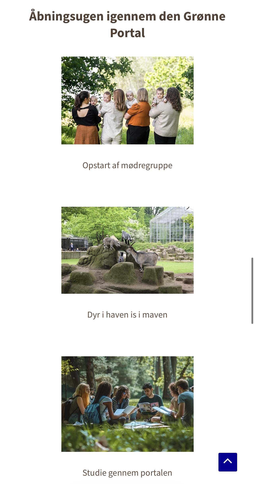

Case 01 · Kampagne og målgruppe
Den Grønne Portal
Et kampagnekoncept, der skal invitere familier til at opleve haven i et roligere tempo.
Udfordring
At skabe interesse for Den Grønne Portal før, under og efter åbningen og gøre kampagnen relevant for både nye og eksisterende besøgende.
Mit bidrag
Jeg udarbejdede målgruppeanalyse og personaer, deltog i 5-sekunders- og first-click-test og bidrog til opbygningen i WordPress.
Det tog jeg med
Testene pegede på, at den rolige retning var tydelig for brugerne. Jeg lærte at koble målgruppeindsigt og feedback til kampagnens budskab og hjemmeside.